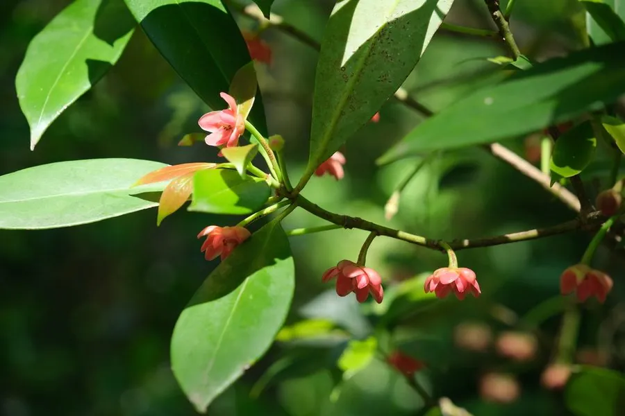

农作物与经济植物 · 植物界
八角 Illicium verum

八角是五味子科常绿乔木，果实呈八角星形，香气浓郁，是卤味和五香粉的重要香料，也可提取八角茴香油。
- 分类
- 门被子植物门纲双子叶植物纲目八角目科五味子科属八角属
- 栖息环境
- 亚热带山谷与林下，喜温暖湿润和半阴
- 地理分布
- 原产中国广西、云南及越南北部，中国广西为主产区
- 保护级别
- 暂无评估（栽培作物）
物种志
八角是五味子科常绿乔木，株高 10–15 m，树皮灰褐色，树冠浓密，枝叶有芳香，叶片长椭圆形，革质，全缘，聚生于枝顶。花淡红或白色，单生。果实为聚合蓇葖果，通常由八个果瓣呈放射状排列，形似八角星，成熟时红褐色，内含光泽的种子。
八角原产中国广西、云南及越南北部，中国栽培历史数百年。它喜温暖湿润、半阴环境，适宜在土层深厚、排水良好的酸性土壤生长。果实秋季成熟，采收后晒干或烘干，可作卤味、五香粉的香料，也可提取八角茴香油，用于食品和日化。中国广西是最大产区，八角也是传统出口香料。八角耐阴，幼树期需要遮阴，果实以饱满、香气浓者为佳，还可用于提取莽草酸。
形态与习性
- 株高10–15 m，常绿乔木
- 叶长椭圆形，革质
- 果实八角星形聚合果
- 成熟期秋季
- 用途卤味、五香粉与茴香油
- 主要产区中国广西
趣味知识
- 八角果实通常有八个果瓣，呈放射状排列。
- 八角是卤味和五香粉的重要香料。
- 中国广西是八角的最大产区。